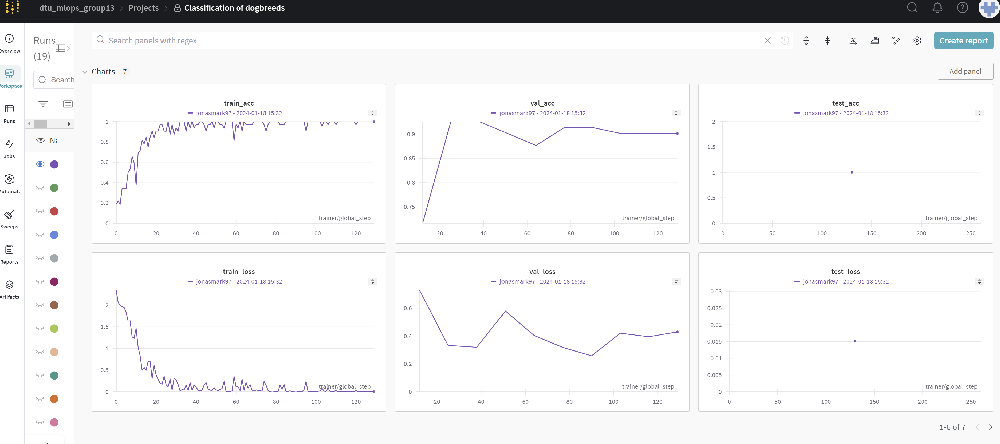
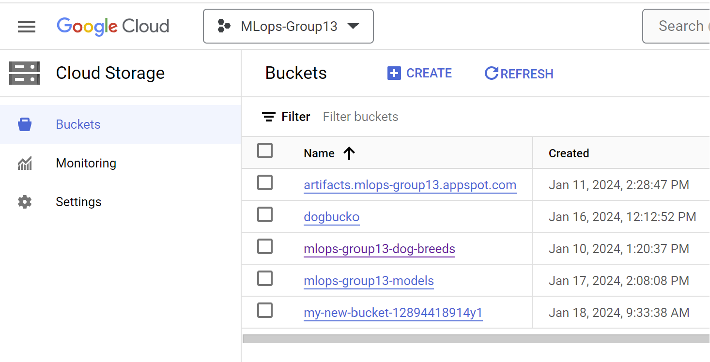
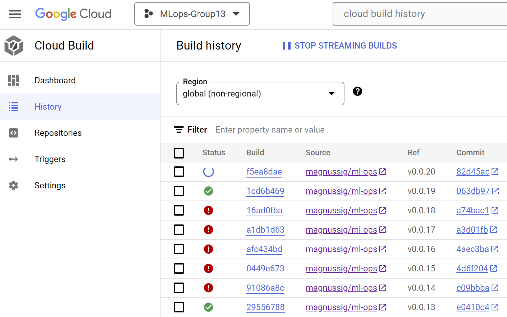

This is the report template for the exam. Please only remove the text formatted as with three dashes in front and behind like:
" --- question 1 fill here ---"
where you instead should add your answers. Any other changes may have unwanted consequences when your report is auto
generated in the end of the course. For questions where you are asked to include images, start by adding the image to
the figures subfolder (please only use .png, .jpg or .jpeg) and then add the following code in your answer:
In addition to this markdown file, we also provide the report.py script that provides two utility functions:
Running:
" bash python report.py html "
will generate an .html page of your report. After deadline for answering this template, we will autoscrape
everything in this reports folder and then use this utility to generate an .html page that will be your serve
as your final handin.
Running
" bash python report.py check "
will check your answers in this template against the constrains listed for each question e.g. is your answer too short, too long, have you included an image when asked to.
For both functions to work it is important that you do not rename anything. The script have two dependencies that can
be installed with pip install click markdown.
The checklist is exhaustic which means that it includes everything that you could possible do on the project in relation the curricilum in this course. Therefore, we do not expect at all that you have checked of all boxes at the end of the project.
make_dataset.py file such that it downloads whatever data you need andrequirements.txt file with whatever dependencies that you are usingpep8) while doing the projectEnter the group number you signed up on <learn.inside.dtu.dk
Answer:
MLOps 13
Enter the study number for each member in the group
Answer:
s223596, s222720, s202075, s230883
What framework did you choose to work with and did it help you complete the project?
Answer:
We used the third-party framework Pytorch, more specifically Pytorch-Lightning, in our project. We utilized the Torchvision pretrained VGG16 model, incorporating default weights derived from the ImageNet challenge, as a base for our model where the output layer of the classifier part was changed from 1000 to 8 which the number of our classes. For data augmentation we used transforms module from torchvision. From Pytorch-lightning we used their Trainer class to train, validate and test our model and integrated result logger. The Adam optimizer from PyTorch's optimizers, in conjunction with the Cross Entropy Loss from torch.nn, comprised our chosen optimization strategy. Dataset and DataLoader class from pytorch were used to create customized data loader.
In the following section we are interested in learning more about you local development environment.
Explain how you managed dependencies in your project? Explain the process a new team member would have to go through to get an exact copy of your environment.
Answer:
We used a simple requirements.txt file stored in our root of the GitHub repository to manage our dependencies which was updated by team members.
To get a complete copy of our development environment one would need get accounts at websites and access to the following teams
Weights and Biases : dtu_mlops_group13
Google Cloud : mlops-group13
GitHub repository : https://github.com/magnussig/ml-ops
Assuming that you already have
python 3.10 installed and the command “python” in the command line points to it.
gnu make installed
Get the github repository
git clone https://github.com/magnussig/ml-ops.git
Create virtual development environment
With the following commands
cd ml-ops
python -m venv venv
Activate virtual environment in Windows
venv\Scripts\activate
For Linux/Unix
source venv/bin/activate
Install packages
make requirements
NOTE: This uses the CPU version of pytorch. See the following for the GPU version : https://pytorch.org/get-started/locally/
To get raw data and put in correct format
make data
We expect that you initialized your project using the cookiecutter template. Explain the overall structure of your code. Did you fill out every folder or only a subset?
Answer:
This is our final structure
Starting from the top.
data:
Contains two folders, raw which contains all the original images and folders and processed
which has the processed
Images
docs:
Contains information and sources for to create the documentation
models:
Local storage for a model who performed the best in the training run
Reports:
Contains information and scripts who create the report from file
Src:
Main code folder.
conf folder contains the hydra configurations
data contains script that processes the data from raw to processed
Models folder contains the model architectures
Api.py contains code the FastAPI code
Data_loader.py is the code that creates the data loaders
Train_model.py is the code containing the training, validation and testing of the model
Upload_file.py uploads the model from models folder to cloud.
Tests:
Contains all our tests which are divided into two. One for the data and data loaders,
and the other for the models and training.
Did you implement any rules for code quality and format? Additionally, explain with your own words why these concepts matters in larger projects.
Answer:
We have a GitHub workflow that runs Ruff on every push we make, if the job fails we see it there and can fix it. We also contemplated implementing a pre-commit hook but didn’t have time to add it to the project.
Also mypy is used for type checking, and similar to ruff, its success or failure will be shown along with a sufficient message to find the error (if exists) and fix it.
The latest commit on GitHub passes both checks.
In the following section we are interested in how version control was used in your project during development to corporate and increase the quality of your code.
How many tests did you implement and what are they testing in your code?
Answer:
We implemented 14 total tests, for data_loading, our custom model, a pretrained model and the data itself. The tests for the data_loader and the data are meant to be run by the developer and the rest are run in a GitHub workflow.
The data tests are primarily for the developer to check if their data is in the correct folder structure, all the raw images were processed correctly and the data loaders are working as intended.
The other tests are to check if the models is working and logging as intended.
What is the total code coverage (in percentage) of your code? If you code had an code coverage of 100% (or close to), would you still trust it to be error free? Explain you reasoning.
Answer:
The total coverage is around 77%, which relatively is a good coverage, but even if it was 100%, it doesn’t guarantee a bug-free application. The reason is that it only says how many lines of code are getting tested, but doesn’t check if all different scenarios are being tested or not. An example is a case in which a function works buggy on a special input, but that input is never present in test condition. In this case the coverage is 100%, but the code is buggy. Or a more related example is that we check if our training function works or not, but because of lack of time we didn’t check if the model is actually improving in the course of training or not.
Did you workflow include using branches and pull requests? If yes, explain how. If not, explain how branches and pull request can help improve version control.
Answer:
When developing features we either worked on a separate branch or a fork of the project, then when it was ready we made a PR. There we got a review from other group members and merged it to the main branch. In “special” moments this workflow was skipped.
Did you use DVC for managing data in your project? If yes, then how did it improve your project to have version control of your data. If no, explain a case where it would be beneficial to have version control of your data.
Answer:
We used data version control integrated into the google cloud storage bucket. Using two rules, the first one was that if an object with the same name was added to the bucket it would take over that spot and the other one would become noncurrent and thus would not be used. The second rule is that if the object has been noncurrent for more than 7 days it will be removed completely from the bucket. This helps us keep training on the most recent data.
Discuss you continues integration setup. What kind of CI are you running (unittesting, linting, etc.)? Do you test multiple operating systems, python version etc. Do you make use of caching? Feel free to insert a link to one of your github actions workflow.
Answer:
We had 2 separate GitHub workflow files, one for code quality which executed ruff and mypy. Both improved our quality substantially. The other workflow file was for unit tests. Then we had a cloudbuild.yaml file to build, push and deploy our docker images.
In the following section we are interested in learning more about the experimental setup for running your code and especially the reproducibility of your experiments.
How did you configure experiments? Did you make use of config files? Explain with coding examples of how you would run a experiment.
Answer:
We used Hydra with two options. One with a default values which could be called in the following way :
python train_model.py
Which would run with default configuration once with our most promising hyperparameters.
The other one we utilized Hydras sweeper plugin Optuna where we created a grid search with the hyper parameters. That can be called with
python train_model.py —-multirun
Both options use the same file for convenience which can be found in src/conf/training_config.yaml
Reproducibility of experiments are important. Related to the last question, how did you secure that no information is lost when running experiments and that your experiments are reproducible?
Answer:
Our main reproducibility is within our data loader where it will always use the same images for training, validation and testing if the batch sizes and split percentage is the same since it uses the same random seed for shuffling. Secondary we utilized config files where if someone wanted to reproduce an experiment they would only need to send the hydra training_config.yaml file given that they are both using the same model.
Upload 1 to 3 screenshots that show the experiments that you have done in W&B (or another experiment tracking service of your choice). This may include loss graphs, logged images, hyperparameter sweeps etc. You can take inspiration from . Explain what metrics you are tracking and why they are important.
Answer:

As can be seen we track the metrics loss (cross entropy loss in our case) and accuracy in training, validation and testing at every epoch. This informed us if we were overfitting, actually learning something and if they are better than previous ones.
Docker is an important tool for creating containerized applications. Explain how you used docker in your experiments? Include how you would run your docker images and include a link to one of your docker files.
Answer:
In our project we had 2 docker images. One for our model training (link: https://github.com/magnussig/ml-ops/blob/main/trainer.dockerfile) and another for our FastAPI that made predictions (https://github.com/magnussig/ml-ops/blob/main/api.dockerfile).
When running into bugs while trying to run your experiments, how did you perform debugging? Additionally, did you try to profile your code or do you think it is already perfect?
Answer:
We tried to get things to work locally, before adding to docker images or running things in the cloud. Some things were only testable in the cloud and those were the most difficult to iterate on, since some jobs/builds took up to 20 minutes to complete.
In the following section we would like to know more about your experience when developing in the cloud.
List all the GCP services that you made use of in your project and shortly explain what each service does?
Answer:
We used Google Storage to store and version our training data, as well as storing our trained models.
We used Vertex AI to train our models.
Cloud Build
Container Registry
Secret Manager
The backbone of GCP is the Compute engine. Explained how you made use of this service and what type of VMs you used?
Answer:
We did not use Compute Engine, we used Vertex AI for running the training docker image and saving the trained model in Cloud Storage.
Insert 1-2 images of your GCP bucket, such that we can see what data you have stored in it. You can take inspiration from.
Answer:


Upload one image of your GCP container registry, such that we can see the different images that you have stored. You can take inspiration from .
Answer:

Upload one image of your GCP cloud build history, so we can see the history of the images that have been build in your project. You can take inspiration from.
Answer:

Did you manage to deploy your model, either in locally or cloud? If not, describe why. If yes, describe how and preferably how you invoke your deployed service?
Answer:
We used Vertex AI for running the training docker image and saving the trained model in Cloud Storage. We then deployed our FastAPI image that used the model in Cloud Storage to make predictions on images.
Did you manage to implement monitoring of your deployed model? If yes, explain how it works. If not, explain how monitoring would help the longevity of your application.
Answer:
We did not manage to implement monitoring. But if we would have then it would be two-fold. First would be implemented so that over time we could measure model performance mostly how much it degrades over time, which would be very helpful in determining the optimal time duration between re-trainings of the model. The second monitoring would be for the hardware which is mostly going to be used to minimize the cost while maintaining low latency and high uptime. This is usually measured with requests per timeunit and time duration of each request.
How many credits did you end up using during the project and what service was most expensive?
Answer:
In total we spent 2.12 USD but were not able to get access to cost breakdown per team member.
Service breakdown:
Cloud Storage : 0.92 USD
Compute Engine : 1.03 USD
Vertex AI : 0.07 USD
In the following section we would like you to think about the general structure of your project.
Include a figure that describes the overall architecture of your system and what services that you make use of. Additionally in your own words, explain the overall steps in figure.
Answer:

Discuss the overall struggles of the project. Where did you spend most time and what did you do to overcome these challenges?
Answer:
One of the issues we had were related to authorization from within Google Cloud, for instance when trying to copy the trained model from within the container to a cloud bucket with “gsutil cp” we always got a 401 response from GCloud. In the end we used another method of copying with a python script.
Also we struggled in the beginning to visualize the big picture of the project, e.g. how to access the trained model to use it for prediction.
State the individual contributions of each team member. This is required information from DTU, because we need to make sure all members contributed actively to the project
Answer:
S223596 : Was in charge of initial model training loop and data
S222720 : Was in charge of cloud deployment and co-charge of docker
S202075 : Was in co-charge of docker
S230883 : Was in charge of setting up initial cookie cutter, project and integration of fastAPI and ruff
For the rest of the project the team equally contributed to f.x. training models, debugging and setting up logging with Weights and Biases.